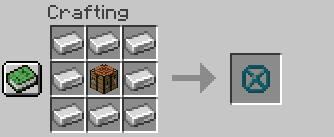
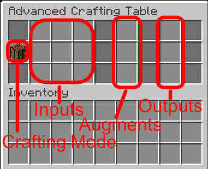
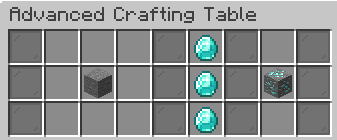

Learn how to install AClib
To install custom loot, you have to download the zip file and then navigate to your .minecraft folder. If you don't know how to find it, you can find the location on your operating system here.
Enter the saves folder and open the folder with the name of your world. If you are playing in minecraft java 1.14+ (datapacks don't exist in bedrock edition) there should be a folder named datapacks. Put the .zip file inside that folder.
Now all datapacks that require AClib to work should work now.
All items added by AClib
AClib only adds one item which is called the "Advanced Crafting Table".
In the future I will maybe add some more crafting blocks.
Everything about the Advanced Crafting Table
The Advanced Crafting Table looks like a gray shulkerbox.
It can be crafted by placing a crafting table in the middle and surrounding it with iron ingots. It will look like structure void first, but you will get the correct item if you take it out.
The Advanced Crafting Table has 9 input slots like a normal workbench, but 3 output slots and 3 additional augment slots.
The Advanced Crafting Table is used like a normal workbench (without the vanilla recipes), but if you close the GUI, the items will stay. An example recipe could look like this:
You put in the ingredients for the recipe and when a matching recipe is found the output shows. If you take out one of the ingredients, the output will vanish and if you take out the output, one of each ingredient will disappear.
if you found any bugs, need help or have some ideas
You can contact me via my discord server.
More contact options